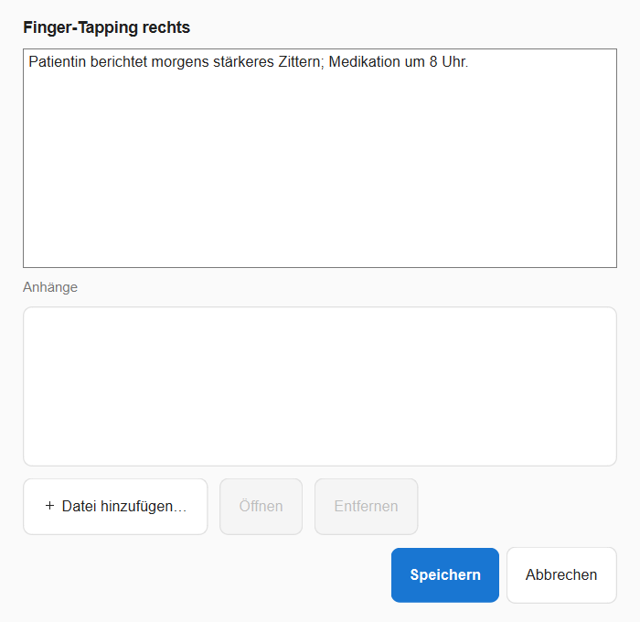
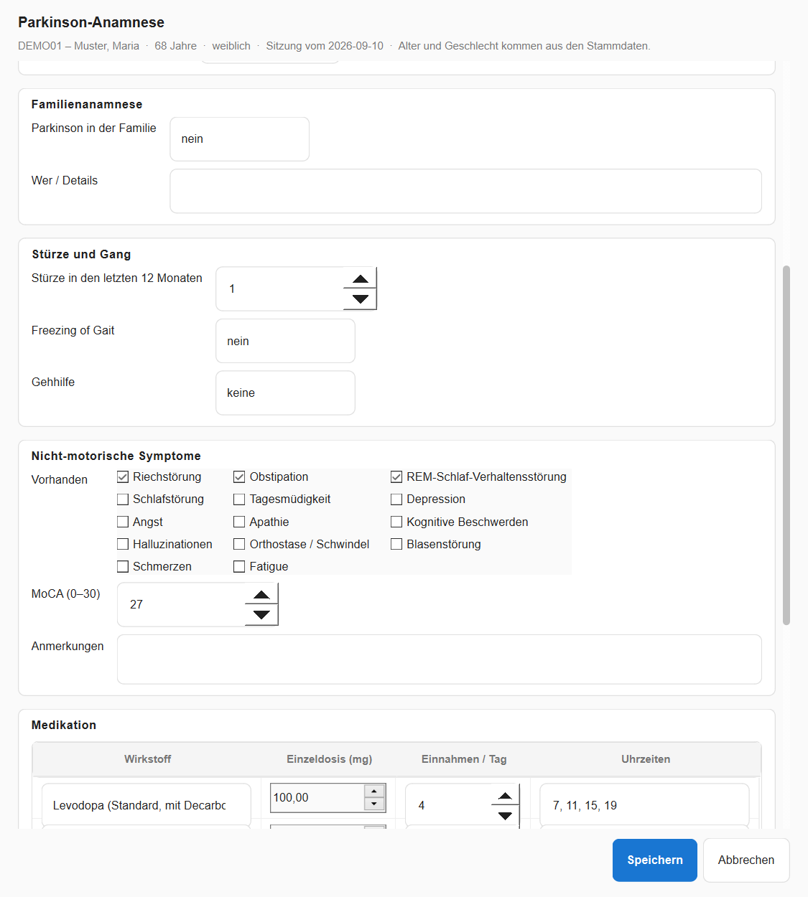
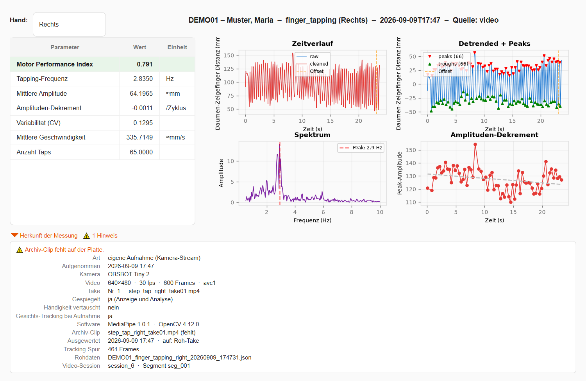
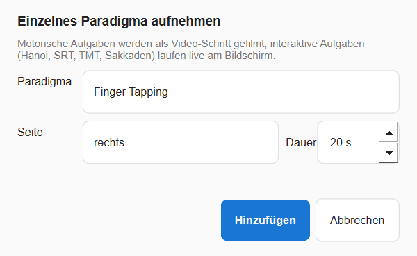
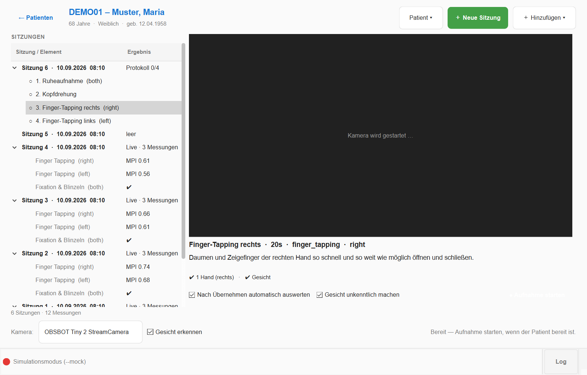
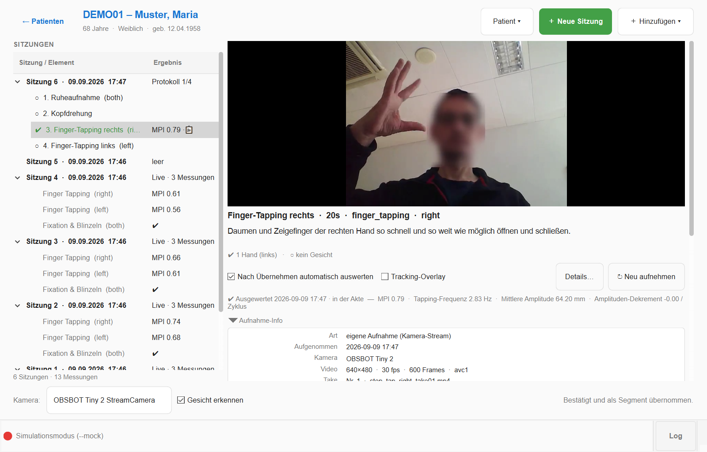
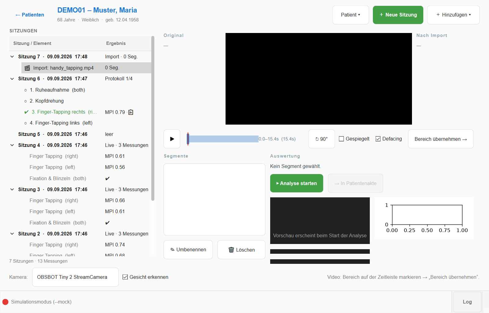

1 · Überblick
Motryx digitalisiert klinische Bewegungstests. Handbewegungen und Augenbewegungen werden kontaktlos erfasst und automatisch in quantitative Parameter übersetzt — live am Gerät oder nachträglich aus Handy-Videos. Alle Ergebnisse landen probandenbezogen in einer lokalen Datenbank und lassen sich als Verlauf über die Zeit betrachten.
| Testbatterie | Inhalt |
|---|---|
| Motorik (MDS-UPDRS III) | Finger Tapping (3.4) · Hand Öffnen/Schließen (3.5) · Pronation/Supination (3.6) · Posturaler Tremor (3.15) · Ruhetremor (3.17) |
| Kognitiv-motorisch | Türme von Hanoi · Räumliche Reaktionszeit (S-SRT) · Trail Making A/B |
| Okulomotorik (Webcam) | Fixation & Blinzeln · Sakkaden-Test (mit 5-Punkt-Eichung) |
| Gesten | 12 klinische Handposen mit Referenz-Bibliothek (Gesture Lab) |
2 · Schnellstart
- Starten: macOS
./start.sh· Windowsstart.ps1/start.bat(legt beim ersten Mal die Python-Umgebung an). Ohne Sensor:./start.sh --mock(Simulationsmodus). - Proband wählen oder neu anlegen (Startbildschirm).
- Proband anklicken — das ist bereits der Arbeitsplatz: links alle Sitzungen mit Inhalt, rechts der Arbeitsbereich. „＋ Neue Sitzung" legt eine Gruppe an, über „＋ Hinzufügen" kommt Inhalt hinein: Protokoll aufnehmen, einzelnes Paradigma oder Video importieren. Ein einzelnes Paradigma wird gefilmt, wenn es motorisch ist; interaktive Aufgaben (Hanoi, SRT, TMT, Sakkaden) sind in der Liste als „live am Bildschirm" markiert und starten direkt.
- Je Schritt: Anweisung lesen → ● Aufnahme starten → Countdown → Aufnahme → Take ansehen → ✔ Übernehmen oder ↻ Wiederholen. Unter der Vorschau zeigt eine Zeile live, ob Hände und Gesicht erkannt werden; während der Aufnahme läuft darunter die Messkurve des Paradigmas live mit (Kontrolle — die Kennwerte kommen aus der Auswertung danach). Die Checkbox „Gesicht unkenntlich machen" steht schon vor der Aufnahme bereit und gilt für diesen Take.
- Ergebnis: mit „Nach Übernehmen automatisch auswerten" wird der bestätigte Take sofort analysiert; das Ergebnis steht in der Inhaltsliste und im Sitzungsbaum, unter dem Take als Zusammenfassung, und „Details…" öffnet Kennwerte und Kurven.
- Notiz: Rechtsklick auf Sitzung, Schritt, Import oder Messung → „📝 Notiz…" — Freitext plus angehängte Dateien (Fotos, PDFs). Ein 📝 im Baum zeigt, wo eine liegt.
- Anamnese: „＋ Hinzufügen → Anamnese / klinische Daten…" — Diagnose, H&Y, UPDRS III, Medikation mit LEDD, nicht-motorische Symptome (Abschnitt 4).
- Weitergeben: „Proband ▾ → 📦 Export-Paket" (Bericht + Videos als ZIP) und auf dem Startbildschirm „🔬 Forschungsexport" (pseudonymisierte Tabellen, Abschnitt 7).

3 · Eingabequellen
Die Tracking-Quelle ist jederzeit umschaltbar (Startbildschirm → „Tracking"). Jede Messung speichert ihre Quelle mit; Tests, die eine Quelle nicht leisten kann, sind im Dashboard automatisch gesperrt (ausgegraut mit Begründung).
| Quelle | Stärken | Hinweise |
|---|---|---|
| Leap Motion | Präziseste 3D-Handdaten (echte mm, absolute Position), 120 Hz | Benötigt Sensor + Ultraleap-Software; keine Augen-Tests |
| Webcam | Ohne Spezialhardware; Hand- und Gesichts-/Augen-Tracking; Tremor über Augen-Referenz | mm-Werte sind Modellschätzungen (Anzeige „≈mm"); gute Beleuchtung wichtig |
| Video | Handy-Videos nachträglich auswerten (VideoLab) | siehe Kapitel VideoLab |
| Simulation | Demo & Schulung ohne Hardware | Ergebnisse deutlich als „⚠ SIMULATION" markiert |

4 · Probanden & Sessions

- Symbole im Baum: ○ offen · ◐ aufgenommen, noch nicht gesichtet · ✔ bestätigt (Video liegt vor);
die Spalte „Ergebnis" zeigt je Sitzung die Art (Protokoll 2/4, Live · 3 Messungen,
Import · 2 Seg.) und je Schritt z. B.
MPI 0.62 ·📋oder „nicht ausgewertet". 📝 = Notiz vorhanden (📎n = Anhänge), der Tooltip zeigt den Text. - Notizen: eine je Eintrag — Sitzung, Aufnahme-Schritt, importiertes Video oder Messung.
Der Dialog nimmt Freitext und Dateien auf (Hinzufügen, Öffnen, Entfernen); die Dateien liegen unter
data/attachments/, die Notiz in der Datenbank. „Erneut aufnehmen" eines ausgewerteten Schritts fragt nach und entfernt dessen Messung, damit keine Messung ohne Video zurückbleibt. - CSV-Export (Menü „Proband ▾") exportiert alle Messungen des Probanden für die Statistik.
- Jede Messung speichert Quelle (Leap/Webcam/Video/Simulation), Dauer, Rohdaten-Verweis und — bei Video — ihre Herkunft (siehe Abschnitt 8).

Anamnese und klinische Daten
＋ Hinzufügen → Anamnese / klinische Daten… öffnet eine Maske für die gewählte Sitzung: Diagnose und Verlauf (Diagnosejahr, Erstsymptom-Seite, Subtyp, Hoehn & Yahr, MDS-UPDRS III und ob im ON oder OFF erhoben), Familienanamnese, Stürze und Gang, nicht-motorische Symptome mit MoCA, die Medikation (eine Zeile je Präparat mit Einzeldosis, Einnahmen pro Tag und Uhrzeiten; Zustand bei der Messung, Minuten seit letzter Einnahme, tiefe Hirnstimulation) und Bemerkungen. Alter und Geschlecht kommen aus den Stammdaten. Unten rechnet die Maske live die Erkrankungsdauer und die LEDD (Levodopa-Äquivalenzdosis; Faktoren nach Tomlinson et al. 2010 stehen in der Maskendatei). Nichts ist Pflicht — eine Anamnese darf lückenhaft sein. Eine neue Maske beginnt mit den Antworten der letzten, im Baum steht sie als 📋 mit Kurzzeile („H&Y 2 · UPDRS III 28 · LEDD 842 mg · OFF"); anklicken zeigt alle Antworten, Rechtsklick bietet Bearbeiten, Notiz und Löschen. Jede Antwort wird als eigene kodierte Beobachtung gespeichert und steht damit Auswertungen und Exporten zur Verfügung.

5 · Tests durchführen

Ablauf Hand-Tests
- Kachel anklicken → Hand wählen (bzw. automatisch bei bilateral/kognitiv).
- Bereitschafts-Gate: Hand über Sensor / vor Kamera halten — erkannt → Countdown 3-2-1.
- Aufnahme mit Live-Kurve; Test stoppt automatisch nach der eingestellten Dauer.
Kognitiv-motorische Tests
- Türme von Hanoi: Scheiben per Pinzettengriff (Daumen+Zeigefinger) greifen, über den Zielstab führen, loslassen.
- S-SRT: Hand zum aufleuchtenden Ziel bewegen und kurz halten; misst implizites Sequenz-Lernen.
- Trail Making: Ziele in Reihenfolge „verbinden" (Teil A: Zahlen, Teil B: Zahlen/Buchstaben im Wechsel).
6 · Augen-Tests (Okulomotorik)
Beide Tests laufen über die Webcam und brauchen keine Hand. Voraussetzungen: Gesicht frontal, gut beleuchtet, vollständig im Bild; Abstand ca. 50–70 cm.
Fixation & Blinzeln

Proband schaut die Testdauer ruhig in die Kamera, Kopf still, normal blinzeln. Keine Eichung nötig — gemessen wird die Blick-Stabilität relativ zu den Augenwinkeln. Ergebnis: Blinkrate/min (bei M. Parkinson oft reduziert), Fixationsstreuung (%IPD), sakkadische Intrusionen, mittlere Lidspalte.
Sakkaden-Test

- Phase 1 – Eichung (~13 s): Ein Punkt erscheint nacheinander an 5 Positionen (Ecken + Mitte). Jeden Punkt ruhig fixieren, nur die Augen bewegen.
- Phase 2 – Test (30 s): Punkte erscheinen in zufälliger Folge (bevorzugt weite Sprünge). So schnell wie möglich hinschauen — sobald der Blick das Ziel kurz hält, springt der Punkt weiter.

Ergebnis: erreichte Ziele & Ziele/min, Sakkaden-Latenz (Median/Mittel), Richtungsfehler-Rate, Anteil ungültiger Abschnitte (Kopfbewegung, Blinzeln).
data/debug/saccade/ aufgezeichnet, damit sich die Eichung nachträglich
nachvollziehen lässt. Feineinstellungen:
paradigms/test_config.yaml → saccade_test; Kameraauflösung:
capture/capture.yaml → camera_width.7 · Ergebnisse & Verlauf


- MPI (Motor Performance Index): Komposit-Score 0–1 aus Geschwindigkeit, Amplitude, Ermüdung und Regelmäßigkeit — grün > 0,7 · gelb 0,4–0,7 · rot < 0,4.
- Automatisches Speichern: Jedes Ergebnis wird sofort in der Datenbank abgelegt („Verwerfen" löscht es wieder). Optional werden die Roh-Frames als JSON gesichert; Video-Auswertungen schreiben sie immer.
- Details einer Messung (Doppelklick oder „Details…"): Kennwert-Tabelle, Zeitverlauf, Peaks, Spektrum, Amplituden-Dekrement — für Live- wie für Video-Messungen. Darunter aufklappbar „Herkunft der Messung": Kamera, Aufnahmezeit, Spiegelung, Archiv-Clip, worauf ausgewertet wurde.


Exporte
- 📦 Export-Paket („Proband ▾"): ein ZIP zur Übergabe — Bericht als HTML, PDF und JSON (Stammdaten, Anamnese, Medikation mit LEDD, Messungen mit Kennwerten, Kurven und Herkunft, Notizen), die Archiv-Clips (wahlweise nur anonymisierte), Tracking-Spuren, Rohdaten und Anhänge, dazu ein Manifest mit Prüfsummen. Optional pseudonymisiert.
- 🔬 Forschungsexport (Startbildschirm): pseudonymisierte Langtabellen aller Probanden als CSV — Probanden, Sitzungen mit klinischen Werten, Messungen mit Herkunft, Kennwerte, klinische Items, Medikation — mit Codebuch. Die Zuordnung Pseudonym ↔ Proband bleibt lokal auf dem Rechner. Optional Notizen und die Rohdaten/Spuren je Messung.
- CSV-Export („Proband ▾"): alle Kennwerte eines Probanden breit, eine Zeile je Messung.
8 · Aufnahme, Import und Auswertung

Über ＋ Hinzufügen kommt Inhalt in die Sitzung: Protokoll aufnehmen (mehrere Schritte nacheinander), Einzelnes Paradigma (ein Schritt) oder Video importieren. Ein importiertes Video erscheint als eigener Eintrag; angeklickt öffnet es den Schnitt-Bereich.



Take ansehen: Player und Tracking-Overlay
Der Player zeigt eigene Takes so gespiegelt, wie die Vorschau bei der Aufnahme — links ist links. „Tracking-Overlay" spielt den Take mit den Landmarken ab, die die Analyse gemessen hat (gespeichert neben dem Clip), nicht mit einer neuen Erkennung; das funktioniert deshalb auch auf einem Archiv mit verwischtem Gesicht. Das Overlay setzt an der aktuellen Stelle des Players ein („ab 12,3 s" in der Statuszeile), läuft bis zum Ende und dann von vorn; beim Ausschalten übernimmt der Player die Stelle. Nur Takes ohne gespeicherte Analyse werden live nachgerechnet — die Statuszeile sagt es.
Aufnahme-Info: was, wann, womit
Unter jedem Take liegt aufklappbar die Aufnahme-Info: Art (eigene Aufnahme oder Import), Zeitpunkt, Kamera, Auflösung/fps/Frames, Take-Nr., ob gespiegelt und ob die Händigkeit vertauscht war, der Archiv-Clip (Größe, Codec/CRF, anonymisiert ja/nein), ob der Roh-Take noch liegt, die Tracking-Spur und jede Auswertung (wann, auf Roh-Take oder Clip, Messung #, Rohdaten, Augenreferenz, MediaPipe-Version). Passt etwas nicht zusammen — Clip fehlt, Auswertung ohne Spur oder nicht in der Akte, Seite des Schritts ungleich Segment, Take aus einer älteren Version ohne Metadaten — steht das als ⚠ Hinweis im Kopf des Panels. Dieselbe Herkunft trägt die Messung in der Akte.
Was von einem Take bleibt (Video-Archiv)
Der Recorder schreibt etwa 1 MB pro Sekunde. Nach dem Übernehmen läuft
jeder Take automatisch durch drei Stufen: Auswerten (auf dem Roh-Take, volle
Qualität) → Archivieren (derselbe Extraktor wie bei Import-Segmenten: Größe
begrenzen, H.264 mit x264-CRF, Gesicht nach privacy.deface unkenntlich
machen, Iris-Spur für die Tremor-Referenz sichern) → Aufräumen (Roh-Take
löschen, sobald der Archiv-Clip vorliegt). Ein 640×480-Take wird dabei rund
35× kleiner; die Messung in der Akte verweist auf den Archiv-Clip.
Nachträglich ändern: Rechtsklick auf einen bestätigten Schritt bietet Neu auswerten (dieselbe Messung wird aktualisiert, keine Kopie) und Paradigma / Seite ändern (das alte Ergebnis wird aus der Akte entfernt und der Take unter dem neuen Label neu ausgewertet). Der Take selbst bleibt unangetastet. Ist der Roh-Take schon aufgeräumt, läuft „Neu auswerten" auf dem archivierten Clip — mit verwischtem Gesicht, was für Hand-Aufgaben ohne Belang ist, für Tremor aber die Augenreferenz kostet; das Label sagt beides. Der Clip wird dabei weder erneut komprimiert noch erneut verwischt.
Einstellungen in video/video.yaml: archive.compact_takes
(Archivieren an/aus), archive.keep_raw_take (Roh-Take zusätzlich behalten),
segments.crf (Qualität, 18 ≈ nahezu verlustfrei … 28 klein).
Solange der Roh-Take noch da ist, wird für eine erneute Auswertung er verwendet;
danach der Archiv-Clip.

Das importierte Video wird im Schnitt-Bereich bearbeitet:
- Video laden — wird automatisch normalisiert (Größe/Format); falsch orientierte Videos mit ↻ 90° drehen.
- Segment markieren (Onset/Offset auf der Zeitleiste) → „Bereich übernehmen" → Paradigma + Hand wählen. Tremor ist per Augen-Referenz möglich (Gesicht muss im Video sichtbar sein).
- Gesicht unkenntlich machen (Checkbox): anonymisiert das Gesicht im gespeicherten Segment-Clip — hand-schonend: eine Hand vor dem Gesicht bleibt scharf. Die Analyse läuft immer auf dem Original.
- Nach Anlegen automatisch auswerten (Checkbox, Standard an): das Segment wird nach dem Zuschnitt sofort analysiert — mit Overlay und Live-Kurve; die bewegte Hand wird automatisch erkannt und der gewählten Seite zugeordnet — und als Messung in die Akte übernommen. Es durchläuft dieselbe Pipeline wie ein eigener Take: Ergebnis, Rohdaten, Tracking-Spur und Herkunft („importiertes Original"). Unter dem Segment stehen Zusammenfassung, Details… und die Aufnahme-Info; ⟳ Neu auswerten aktualisiert dieselbe Messung.
- Im Sitzungsbaum stehen die Segmente unter dem Import-Eintrag (✂) mit Ergebnis; Rechtsklick: Details, Neu auswerten, Notiz, Segment löschen (nimmt die Messung mit).
9 · Gesture Lab — klinische Handposen

- Bibliothek aufbauen (einmalig, ohne Proband): im Bereich GESTEN jede Pose aufnehmen (statisch: stoppt automatisch nach 3 s). Mit ⬆ Export / ⬇ Import lässt sich die fertige Bibliothek als JSON zwischen Rechnern teilen.
- Probandenbezogene Batterie: aus der Probanden-Detailansicht öffnen → ERKENNUNG → Modus „Batterie" → alle 12 Posen durchlaufen → 💾 In Probandenakte speichern. Ergebnis (Score, Ähnlichkeiten pro Pose) erscheint in Matrix und Verlauf.
- Live-Feedback pro Finger (❌/✓) zeigt, welcher Finger von der Referenz abweicht.
10 · Tipps & Fehlerbehebung
| Problem | Lösung |
|---|---|
| „Sensor nicht erkannt" | Ultraleap-Software installiert und Dienst gestartet? USB prüfen (LED grün). Nur eine App-Instanz gleichzeitig. Details: README → Troubleshooting. |
| Webcam-Tests gesperrt | MediaPipe-Umgebung einrichten — Windows: powershell mediapipe_sidecar\setup_sidecar.ps1, macOS: bash mediapipe_sidecar/setup_sidecar.sh;
dann unter „Tracking" die Webcam übernehmen. |
| „Kein Gesicht erkannt" | Frontal in die Kamera, Gesicht vollständig im Bild, mehr Licht, starke Gegenlichter vermeiden. |
| Sakkaden-Eichung scheitert | Näher an den Bildschirm, Kopf ruhig (ggf. Kinn aufstützen);
Schwellen in test_config.yaml → saccade_test lockern. |
| Tremor auf Webcam gesperrt / Warnung „Augen-Referenz" | Gesicht muss mit im Bild sein (liefert den Maßstab). Bei < 50 % Abdeckung erscheint eine Warnung — Amplituden dann nicht verwenden. |
| Links und rechts vertauscht? | Eigene Takes zeigen Player, Vorschau und Overlay unter der Webcam-Einstellung
(capture/capture.yaml → sources.webcam.mirror); importierte Videos
unter ihrem eigenen „Gespiegelt"-Flag im Schnitt-Bereich. Die Aufnahme-Info
nennt beide Flags je Take. |
| Fehler direkt nach einem Software-Update | App einmal neu starten (alte Sitzung kann gemischte Modul-Stände laden). |
| Logs einsehen | Statusleiste → „Log" (Live-Ansicht) oder data/logs/tappd.log. |